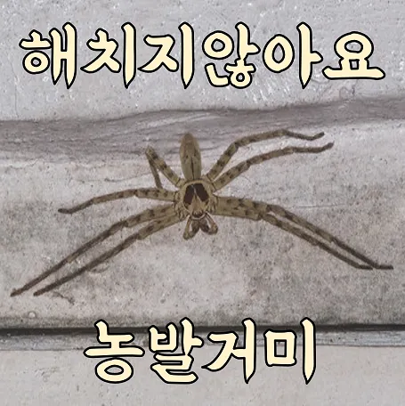
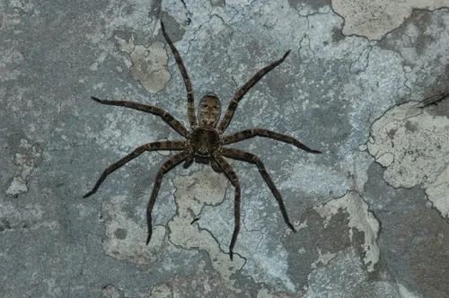
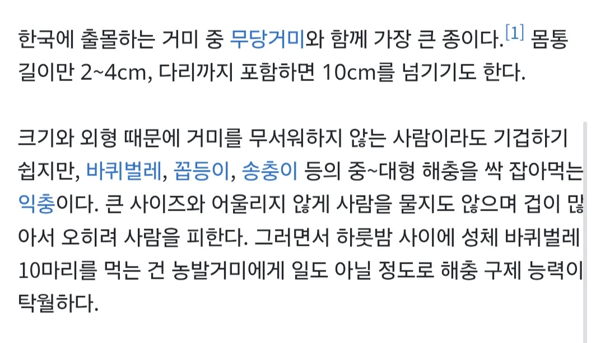
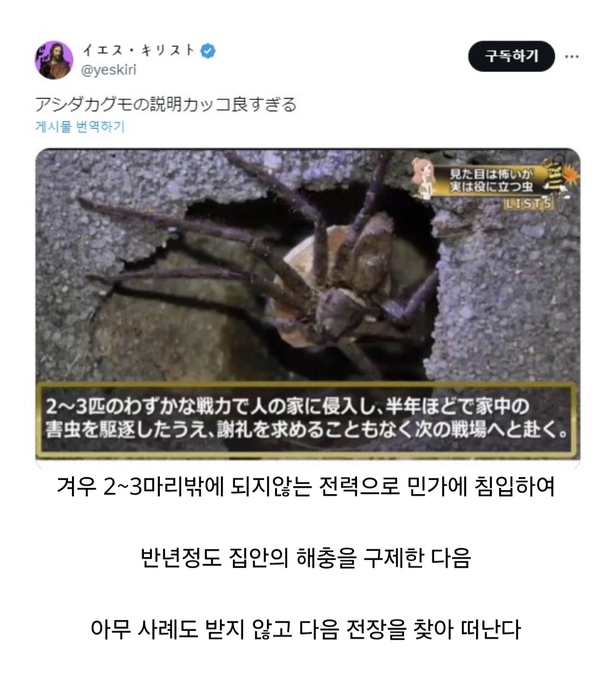
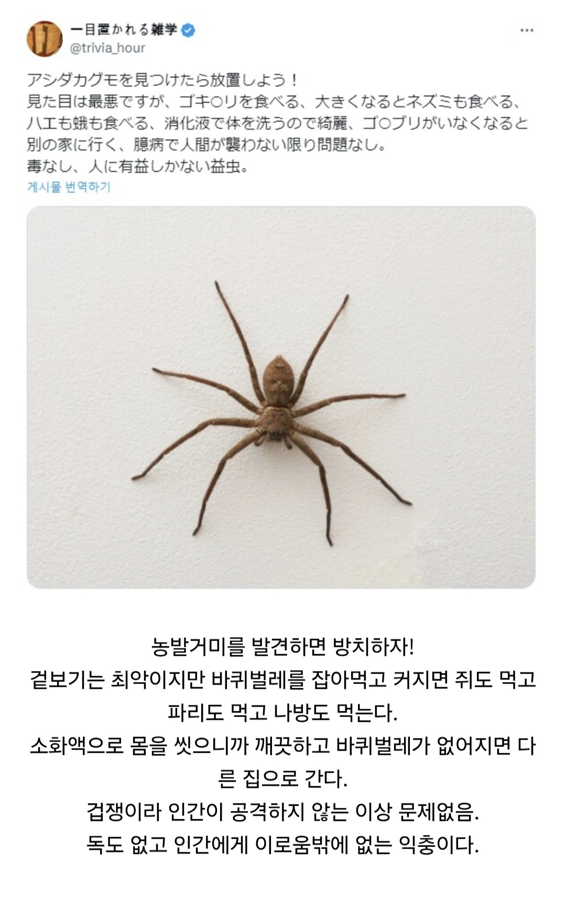
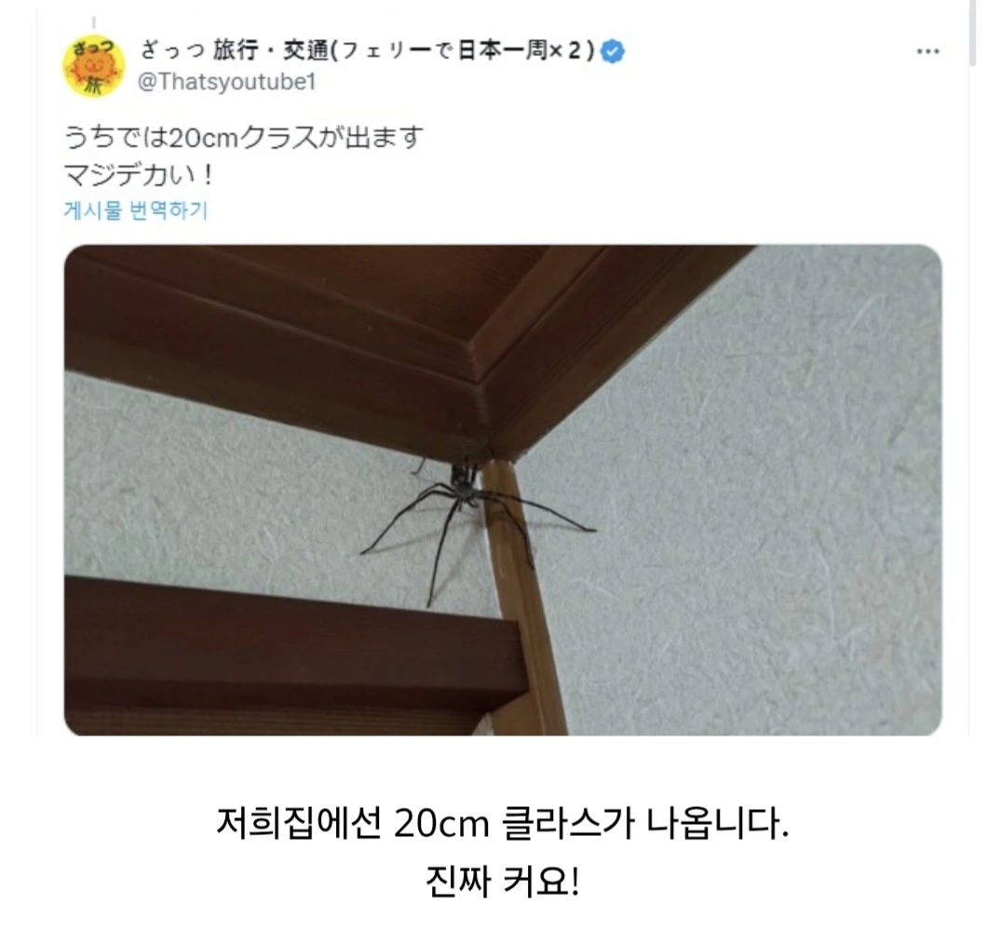
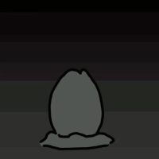
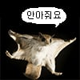

호주에서 존나 큰거봤는데 나무에 웬 갈색 우산이 붙어있나 했음.
그는 침묵의 수호자이자, 우리를 지켜보는 보호자, "다크나이트"란다.
…그렇다면 당신도 나를 쫒으시오.
나를 보고 기겁하시오.
살충제를 뿌려내게 보내시오.
농발거미,
농발거미!
그가 왜 도망가죠 아빠?
빰! 빰!
(쿠구궁)
빠바- 빠바-!!
빰! 빰! (쿠구궁)
빠바- 빠바-!!
(음이 한 단계 더 높게 치고 올라가며 웅장하게)
파바-! 파바-!!
빰! 빰!
빠바- 빠바- 빠아아아암---!!!
(다시 묵직한 베이스 리듬이 깔리며 타다닥 타다닥 배트포드가 질주하는 느낌)
빰. 빰. 빠바! 빰. 빰. 빠바!
두둥- 두둥-
빠바- 빠바-!!
그리고 아빠는 왜 또 도망가요?
아빠 일어나요 그냥 좀 큰 거미잖아
...기절했네
그는 발자국없는 범이요 울지않는 부엉이다
바퀴벌레 같은 벌레들은 좀 징그러울뿐 무섭진 않은데
거미는 본능에서 나오는 공포가 있는게 유전자에 각인되어있는 무언가가 있는거 같어
님 그린고블린임?
들켰네 뒤져라 스파이더맨
옛날 동굴에 독거미들이 많았나
바퀴벌레는 혐오고
거미는 독거미 때문일수도?
농발거미는 인간의 인지능력를 벗어난 속도로 움직인다
어렸을 때 우연히 농발거미 창고에서 본 적 있었는데 그땐 농발거미라는 종류도 몰랐음
아무튼 댑따 커서 영화에 나오는 타란툴라거미처럼 독 있겠네 시발하고 빗자루로 촹촹 휘둘렀는데 점프한 것 마냥 푱 하고 도망가서 소름이 쫙 끼쳤음
나는 거미류는 다 이쁘던데 독있어도 이쁨
아니야... 거미는 익충이 아냐...
걔내들도 똥을 싸... 그것도 찐득한 물똥을...
거미똥 vs 바퀴벌레 vs 고자되기
농발거미 쇼츠나 움짤 보면 진짜 개빠르더라
제 심장과 정신을 해친단말이에요...
알아서 해충을 치워주고 나간다는데
욕조나 세면대에 빠져있으면 개 패닉이라던데 ㅋㅋㅋㅋㅋㅋㅋㅋㅋ
죄송한데 나가주시겠어요?
“거니오.”
https://youtu.be/s7OjIhXROpM
돈벌레도 일부러 안죽이는데 자꾸보면 귀엽더라 은근
농발거미 한 마리 키워볼까 올여름 동안 집에서는 곱등이 ㅈㄴ 튀어나오고 오늘은 바퀴벌레도 조우했는데
이집은 더이상 먹을게...있네?
개드립 오면 나 포함 개붕이들 다 잡아먹힘


농
선생님. 같은편이죠? 같은편 맞죠? 으프프픞ㄹㄹㅇㄹㅇㅇㅎㅀㅎㅁㄴㅇㅁ
거미는 신기하게 별로 안혐오스러움
정보)농발거미는 점프도 가능하다
호주 5년정도 살면서 농발거미 제일 큰거 본게 손바닥만했음.
벌레 다 드시고 집에서 나가주실 때까지 바깥 생활 해야하나
키워야겠네 ㅋㅋ
제발 눈앞에만 보이지 말아다오
틀렸다
농발거미가 네집에 살정도면
집으로서 이미 틀렸단 소리다
농발거미가 서식지로 점집을 정도로 먹이가 많다면
농발거미의 먹이는..?
군대에서 첨봤는데 진짜 식은땀흘렀음
대충 무섭게생긴 갸루인데 속은착하고 겁많은 갭모에갸루라는거지?
오…
얼마나 커지길래 쥐를 잡을 수 있는거지
새끼쥐 정도인가 거미 끈끈이에 쥐가 잡히나보네
저거 10cm라고 쓴거는 확실한거냐? 거의 30cm 봤는데?
그것의 똥은 당신의 장판에 지워지지 않는 얼룩을 남길것입니다
칼을 쥐고 나를 쳐다보는ㄴ데 어떻게 그냥 놔두냐고
마지막 짤 바지벗는줄 알았는데
징그럽게 생기면 다 해충이지
어우 시발 아무리 익충이래도 저건 좀
